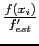
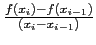
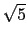

suivant: fsolve avec l'option steffenson_solver
monter: Résolution d'équations avec fsolve
précédent: fsolve avec l'option newton_solver
Table des matières
Index
La méthode de la sécante est une méthode simplifiée de la méthode de
Newton.
Le calcul de f'(xn) se fait de façon approchée : cela peut être utile quand le calcul de la derivée est couteux.
On a :
xi+1 = xi -  et
f'est = 
Pour le calcul de x1 on utilise la méthode de Newton.
La convergence pour les racines simples est d'ordre
(1 + )/2 = 1.62.
On tape :
fsolve((cos(x))=x,x,-1..1,secant_solver)
On obtient :
[0.739085078239,0.739085137844]
On tape :
fsolve((cos(x))=x,x,0,secant_solver)
On obtient :
0.739085133215
Documentation de giac écrite par Renée De Graeve